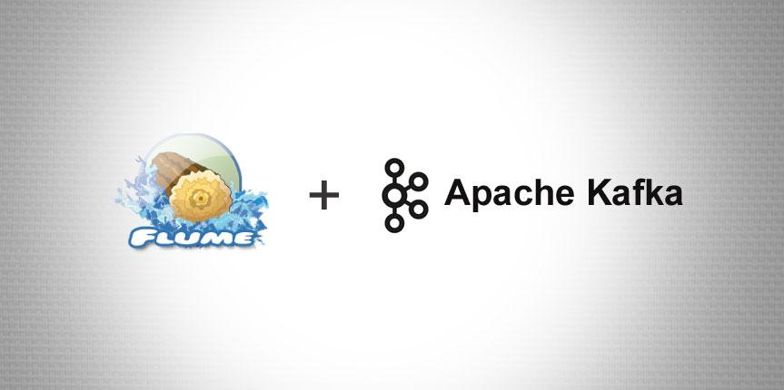
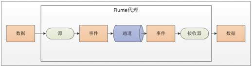
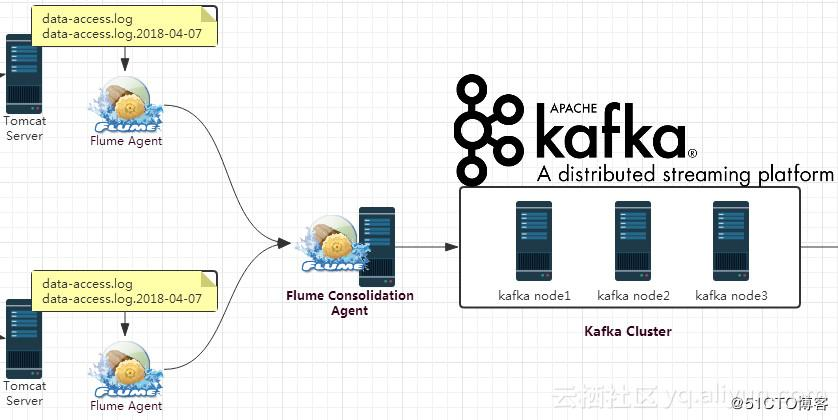
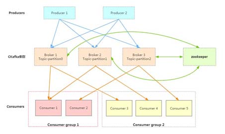
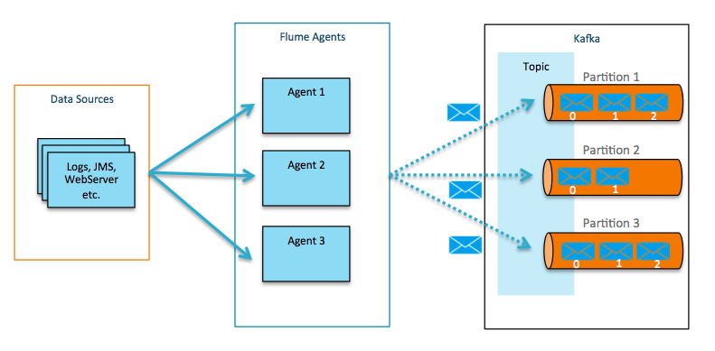
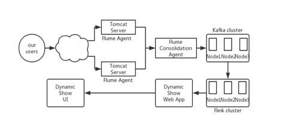

Flume Integration with Kafka
概述
（1）kafka和flume都是日志系统。kafka是分布式消息中间件，自带存储，提供push和pull存取数据功能。flume分为agent（数据采集器）,collector（数据简单处理和写入）,storage（存储器）三部分，每一部分都是可以定制的。比如agent采用RPC（Thrift-RPC）、text（文件）等，storage指定用hdfs做。
（2）kafka做日志缓存应该是更为合适的，但是 flume的数据采集部分做的很好，可以定制很多数据源，减少开发量。所以比较流行flume+kafka模式，如果为了利用flume写hdfs的能力，也可以采用kafka+flume的方式。
1. Flume介绍
Flume是一个分布式、可靠、和高可用的海量日志聚合的系统，支持在系统中定制各类数据发送方，用于收集数据；同时，Flume提供对数据进行简单处理，并写到各种数据接受方（可定制）的能力。
可靠性: 当节点出现故障时，日志能够被传送到其他节点上而不会丢失。Flume提供了三种级别的可靠性保障，从强到弱依次分别为：end-to-end（收到数据agent首先将event写到磁盘上，当数据传送成功后，再删除；如果数据发送失败，可以重新发送。），Store on failure（这也是scribe采用的策略，当数据接收方crash时，将数据写到本地，待恢复后，继续发送），Best effort（数据发送到接收方后，不会进行确认）。
可扩展性: Flume采用了三层架构，分别为agent，collector和storage，每一层均可以水平扩展。其中，所有agent和collector由master统一管理，这使得系统容易监控和维护，且master允许有多个（使用ZooKeeper进行管理和负载均衡），这就避免了单点故障问题。
可管理性: 所有agent和colletor由master统一管理，这使得系统便于维护。多master情况，Flume利用ZooKeeper和gossip，保证动态配置数据的一致性。用户可以在master上查看各个数据源或者数据流执行情况，且可以对各个数据源配置和动态加载。Flume提供了web 和shell script command两种形式对数据流进行管理。
功能可扩展性用户可以根据需要添加自己的agent，collector或者storage。此外，Flume自带了很多组件，包括各种agent（file， syslog等），collector和storage（file，HDFS等）。
2. Flume 的 一些核心概念：
| 组件名称 | 功能介绍 |
| 代理 | 使用JVM 运行Flume。每台机器运行一个agent，但是可以在一个agent中包含多个sources和sinks。 |
| Client客户端 | 生产数据，运行在一个独立的线程。 |
| Source源 | 从Client收集数据，传递给Channel。 |
| Sink接收器 | 从Channel收集数据，进行相关操作，运行在一个独立线程。 |
| Channel通道 | 连接sources和sinks ，这个有点像一个队列。 |
| Events事件 | 传输的基本数据负载。 |
3. Flume的整体构成图

4. tomcat业务日志收集

关于Flume收集tomcat业务日志，需要调整的点比较多；设计初衷是： 1）HDFS中收集所有的历史日志，包括catalina、access_log、业务日志等。 2）kafka只实时收集access_log和指定的业务日志；我们可以用这些数据做业务监控等。
5.KAFKA
基本概念 kafka是一个分布式的消息缓存系统 kafka集群中的服务器叫做broker kafka有两种客户端，producer（消息生产者），consumer（消息消费者），客户端（两种）与kafka服务器之间使用tcp通信 kafka中不同业务系统的消息可以通过topic进行区分，而且每一个消息topic都会被分区，以分担消息读写的负载 每一个分区可以有多个副本，防止数据的丢失 如果某个分区中的数据需要更新，必须通过该分区所有副本中的leader来更新 消费者可以分组，比如有两个消费者AB，共同消费一个topic:testTopic，AB所消费的消息不会重复，比如testTopic中有100个消息，编号为0-99，如果A消费0-49，那么B就消费50-99。消费者在消费时可以指定消息的起始偏移量

producer是数据源，比如flume架构，consumer是数据的输出，例如storm架构。Kafka服务器支持消息的分主题、分区。不同的子系统可以使用不同的主题。分区的意义在于负载均衡一般性的大数据流处理，还可以包括FLINK以及NOSQL 这里介绍如何集成Flume 和 Kafka.

